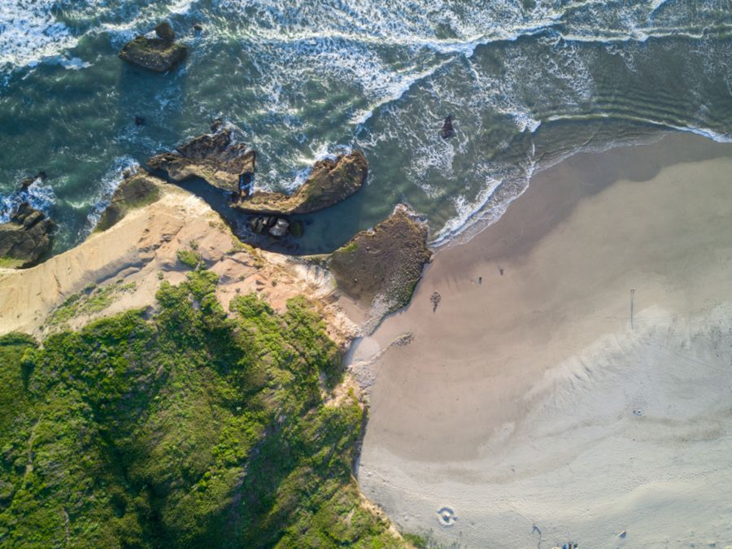

リールがバイエルン・ミュンヘンを破った後のカルヴィン・フェルドンクの控えめな祝福Perayaan Malu-malu Calvin Verdonk setelah Lille Tekuk Bayern Munchenカルヴィン・フェルドンクは、リールのバイエルン・ミュンヘン戦の勝利を、笑いと拍手、小さく跳ねて祝った。
リールがバイエルン・ミュンヘンを破った後のカルヴィン・フェルドンクの控えめな祝福Perayaan Malu-malu Calvin Verdonk setelah Lille Tekuk Bayern Munchenカルヴィン・フェルドンクは、リールのバイエルン・ミュンヘン戦の勝利を、笑いと拍手、小さく跳ねて祝った。 英国、スマトラ―ジャワ送電プロジェクトへの融資の用意があるとされるInggris Disebut Siap Biayai Proyek Transmisi Listrik Sumatra-Jawaアイルランガ・ハルタルト経済担当調整大臣は、英国がスマトラとジャワを結ぶ送電プロジェクトへの融資の用意があることを明らかにした。
英国、スマトラ―ジャワ送電プロジェクトへの融資の用意があるとされるInggris Disebut Siap Biayai Proyek Transmisi Listrik Sumatra-Jawaアイルランガ・ハルタルト経済担当調整大臣は、英国がスマトラとジャワを結ぶ送電プロジェクトへの融資の用意があることを明らかにした。 マウディ・アユンダ、活動休止の検討について率直に語るMaudy Ayunda Blak-blakan soal Pertimbangkan Hiatusマウディ・アユンダは、第1子の出産後に芸能界での活動を休止することを検討していることについて率直に語った。
マウディ・アユンダ、活動休止の検討について率直に語るMaudy Ayunda Blak-blakan soal Pertimbangkan Hiatusマウディ・アユンダは、第1子の出産後に芸能界での活動を休止することを検討していることについて率直に語った。 KPK、捜査官AKBPロッサ氏がすでに国家警察本部に戻ったことを確認KPK Konfirmasi Penyidik AKBP Rossa Sudah Kembali ke Mabes PolriKPKは、AKBPロッサ・プルボ・ベクティ氏がKPKでの任務を終えた後、国家警察本部での勤務に戻ったことを確認した。ロッサ氏は先週から復帰している。
KPK、捜査官AKBPロッサ氏がすでに国家警察本部に戻ったことを確認KPK Konfirmasi Penyidik AKBP Rossa Sudah Kembali ke Mabes PolriKPKは、AKBPロッサ・プルボ・ベクティ氏がKPKでの任務を終えた後、国家警察本部での勤務に戻ったことを確認した。ロッサ氏は先週から復帰している。 KKP、インドネシアがブルーカーボン向けに戦略的地点18カ所を設定したと発表KKP Sebut RI Tetapkan 18 Lokasi Strategis untuk Blue CarbonKKPは、インドネシアがブルーカーボンに向けた海洋空間計画など、改善の取り組みと空間の配分から始めると述べた。
KKP、インドネシアがブルーカーボン向けに戦略的地点18カ所を設定したと発表KKP Sebut RI Tetapkan 18 Lokasi Strategis untuk Blue CarbonKKPは、インドネシアがブルーカーボンに向けた海洋空間計画など、改善の取り組みと空間の配分から始めると述べた。 NIKを使ってオンラインでNPWPを確認する3つの方法3 Cara Cek NPWP dengan NIK secara Online住民は16桁のNIKを使って自分のNIKを確認できる。以下は、NIKを使ってNPWPを確認する方法である。
NIKを使ってオンラインでNPWPを確認する3つの方法3 Cara Cek NPWP dengan NIK secara Online住民は16桁のNIKを使って自分のNIKを確認できる。以下は、NIKを使ってNPWPを確認する方法である。 MotoGPバレンシア：アプリリア対ドゥカティの対決、コンストラクターズタイトル決定戦MotoGP Valencia: Duel Aprilia vs Ducati, Penentuan Gelar KonstruktorMotoGPバレンシア2026は、アプリリアとドゥカティにとって決定的なシーズン最終戦となる。
MotoGPバレンシア：アプリリア対ドゥカティの対決、コンストラクターズタイトル決定戦MotoGP Valencia: Duel Aprilia vs Ducati, Penentuan Gelar KonstruktorMotoGPバレンシア2026は、アプリリアとドゥカティにとって決定的なシーズン最終戦となる。 宇宙空間を埋め尽くす準備、SpaceXが衛星100万基の打ち上げ許可を取得Siap Banjiri Ruang Angkasa, SpaceX Dapat Izin Luncurkan 1 Juta SatelitFCCはSpaceXに対し、2040年までに最大100万基のStarmind衛星を打ち上げることを許可した。このプロジェクトは、宇宙空間にデータセンターを構築するためのものだ。
宇宙空間を埋め尽くす準備、SpaceXが衛星100万基の打ち上げ許可を取得Siap Banjiri Ruang Angkasa, SpaceX Dapat Izin Luncurkan 1 Juta SatelitFCCはSpaceXに対し、2040年までに最大100万基のStarmind衛星を打ち上げることを許可した。このプロジェクトは、宇宙空間にデータセンターを構築するためのものだ。 2027年東ジャワ州UMKの一覧、スラバヤが最も高く565万ルピアDaftar Lengkap UMK Jatim 2027, Surabaya Tertinggi Rp5,65 Juta東ジャワ州政府（Pemprov Jatim）は、38地域を対象とする2027年の東ジャワ州県・市最低賃金（UMK）の額を正式に決定した。
2027年東ジャワ州UMKの一覧、スラバヤが最も高く565万ルピアDaftar Lengkap UMK Jatim 2027, Surabaya Tertinggi Rp5,65 Juta東ジャワ州政府（Pemprov Jatim）は、38地域を対象とする2027年の東ジャワ州県・市最低賃金（UMK）の額を正式に決定した。 パレスチナの若者、ガザの瓦礫の中で太陽熱給湯器を作るPemuda Palestina Bikin Pemanas Air Tenaga Surya di Balik Puing Gazaガザの瓦礫と厳しい冬の寒さの中で、パレスチナの若者が太陽光を利用した給湯器を作り出した。
パレスチナの若者、ガザの瓦礫の中で太陽熱給湯器を作るPemuda Palestina Bikin Pemanas Air Tenaga Surya di Balik Puing Gazaガザの瓦礫と厳しい冬の寒さの中で、パレスチナの若者が太陽光を利用した給湯器を作り出した。 日の出前からすでに賑わっているジャカルタの場所一覧Deretan Tempat di Jakarta yang Sudah Ramai Sebelum Matahari Terbitジャカルタの賑わいは、必ずしも日の出後に始まるわけではないことが分かった。いくつかの場所では、真夜中から未明にかけてすでに活動が行われている。
日の出前からすでに賑わっているジャカルタの場所一覧Deretan Tempat di Jakarta yang Sudah Ramai Sebelum Matahari Terbitジャカルタの賑わいは、必ずしも日の出後に始まるわけではないことが分かった。いくつかの場所では、真夜中から未明にかけてすでに活動が行われている。 身元が判明したボゴールの違法採掘場の犠牲者6人の名前リストDaftar Nama 6 Korban Galian Tambang Ilegal Bogor yang Teridentifikasi西ジャワ州警察のDVIチームは、ボゴールの違法採掘作業員の遺体袋13袋を受け取った。6人の身元が判明し、残り7人は現在も確認作業中だ。
身元が判明したボゴールの違法採掘場の犠牲者6人の名前リストDaftar Nama 6 Korban Galian Tambang Ilegal Bogor yang Teridentifikasi西ジャワ州警察のDVIチームは、ボゴールの違法採掘作業員の遺体袋13袋を受け取った。6人の身元が判明し、残り7人は現在も確認作業中だ。 プラモノ氏、オーストラリアでシドニー・メトロを試乗、今後の協力を模索Pramono Jajal Sydney Metro di Australia, Jajaki Kerja Sama ke Depanジャカルタ首都特別州知事のプラモノ・アヌン氏は、PT MRTジャカルタの社長とともに、火曜日（24/11）にシドニー・メトロのサービスを直接試乗した。
プラモノ氏、オーストラリアでシドニー・メトロを試乗、今後の協力を模索Pramono Jajal Sydney Metro di Australia, Jajaki Kerja Sama ke Depanジャカルタ首都特別州知事のプラモノ・アヌン氏は、PT MRTジャカルタの社長とともに、火曜日（24/11）にシドニー・メトロのサービスを直接試乗した。 キャンディー工場火災の犠牲者捜索に探知犬を投入Pencarian Korban Kebakaran Pabrik Permen Libatkan Anjing Pelacak国家警察Baharkamは、セランのキャンディー工場火災の犠牲者を捜索するため、探知犬3頭と隊員10人を派遣した。従業員30人が行方不明と報告されている。
キャンディー工場火災の犠牲者捜索に探知犬を投入Pencarian Korban Kebakaran Pabrik Permen Libatkan Anjing Pelacak国家警察Baharkamは、セランのキャンディー工場火災の犠牲者を捜索するため、探知犬3頭と隊員10人を派遣した。従業員30人が行方不明と報告されている。 プラボウォ氏の副大統領候補となった後のスギオノ氏の言葉：これは光栄だKata-kata Sugiono usai Jadi Cawapres Prabowo: Ini Kehormatan人間開発・文化担当調整大臣のスギオノ氏は、プラボウォ氏の副大統領候補（cawapres）の提案に名前が挙がった後、口を開いた。
プラボウォ氏の副大統領候補となった後のスギオノ氏の言葉：これは光栄だKata-kata Sugiono usai Jadi Cawapres Prabowo: Ini Kehormatan人間開発・文化担当調整大臣のスギオノ氏は、プラボウォ氏の副大統領候補（cawapres）の提案に名前が挙がった後、口を開いた。 ヒルステート対SOOP：ジョーダン・ウィルソンがメガワティを高く評価Hillstate vs SOOP: Jordan Wilson Beri Pujian Tinggi kepada Megawatiヒュンダイ・ヒルステートのアウトサイドヒッター、ジョーダン・ウィルソンは、木曜日（26/11）のSOOP SOOPers戦を前に、メガワティ・ハンゲストリ・ペルティウィを高く評価した。
ヒルステート対SOOP：ジョーダン・ウィルソンがメガワティを高く評価Hillstate vs SOOP: Jordan Wilson Beri Pujian Tinggi kepada Megawatiヒュンダイ・ヒルステートのアウトサイドヒッター、ジョーダン・ウィルソンは、木曜日（26/11）のSOOP SOOPers戦を前に、メガワティ・ハンゲストリ・ペルティウィを高く評価した。 ルピアへの圧力で商品価格がさらに高騰する恐れに警戒Waspada Harga Barang Makin Mahal Gara-gara Rupiah Tertekanエコノミストらは、ルピア安が商品価格の上昇を招くと警告している。しかし、ルピア安は金融政策から財政政策に至る政策の連携によって抑えることができる。
ルピアへの圧力で商品価格がさらに高騰する恐れに警戒Waspada Harga Barang Makin Mahal Gara-gara Rupiah Tertekanエコノミストらは、ルピア安が商品価格の上昇を招くと警告している。しかし、ルピア安は金融政策から財政政策に至る政策の連携によって抑えることができる。 「Senator Menyapa 2026」第4話：開発の恩恵を受けているのは誰か？Senator Menyapa 2026 Episode 4: Siapa yang Menikmati Pembangunan?「地域インフラ：開発の恩恵を受けているのは誰か？」というテーマを取り上げる「Senator Menyapa 2026」の第4回エピソードは、本日11月26日（木）に開催される。
「Senator Menyapa 2026」第4話：開発の恩恵を受けているのは誰か？Senator Menyapa 2026 Episode 4: Siapa yang Menikmati Pembangunan?「地域インフラ：開発の恩恵を受けているのは誰か？」というテーマを取り上げる「Senator Menyapa 2026」の第4回エピソードは、本日11月26日（木）に開催される。 バイエルンを下した後、リール監督がカルフィン・フェルドンクを称賛した言葉Kata-kata Pelatih Lille Puji Calvin Verdonk setelah Sikat Bayernリールのダヴィデ・アンチェロッティ監督は、チャンピオンズリーグの試合でレ・ドーグのバイエルン・ミュンヘン戦勝利に貢献したカルフィン・フェルドンクを率直に称賛した。
バイエルンを下した後、リール監督がカルフィン・フェルドンクを称賛した言葉Kata-kata Pelatih Lille Puji Calvin Verdonk setelah Sikat Bayernリールのダヴィデ・アンチェロッティ監督は、チャンピオンズリーグの試合でレ・ドーグのバイエルン・ミュンヘン戦勝利に貢献したカルフィン・フェルドンクを率直に称賛した。 トランプ氏、14カ国への新たな関税を提案、インドネシアから中国までリスト入りTrump Usul Tarif Baru untuk 14 Negara, RI hingga China Masuk Daftarアメリカ合衆国（米国）のドナルド・トランプ大統領は、欧州連合、中国、インドネシアを含む14カ国に対する新たな関税の賦課を提案した。
トランプ氏、14カ国への新たな関税を提案、インドネシアから中国までリスト入りTrump Usul Tarif Baru untuk 14 Negara, RI hingga China Masuk Daftarアメリカ合衆国（米国）のドナルド・トランプ大統領は、欧州連合、中国、インドネシアを含む14カ国に対する新たな関税の賦課を提案した。 リストヨ・シギットらによる盗聴と反逆の事件の最新情報Update Terbaru Kasus Penyadapan dan Makar Listyo Sigit Csインドネシア国家警察刑事捜査局（Bareskrim Polri）は、リストヨ元国家警察長官を含む将校6人が関与した反逆の疑いのある事件を捜査している。複数の容疑者が解任され、制裁が科せられた。
リストヨ・シギットらによる盗聴と反逆の事件の最新情報Update Terbaru Kasus Penyadapan dan Makar Listyo Sigit Csインドネシア国家警察刑事捜査局（Bareskrim Polri）は、リストヨ元国家警察長官を含む将校6人が関与した反逆の疑いのある事件を捜査している。複数の容疑者が解任され、制裁が科せられた。 副大統領候補の健康診断、RSPADが専門医25人を派遣Tes Kesehatan Cawapres, RSPAD Terjunkan 25 Dokter SpesialisRSPADガトット・スブロトが、専門医25人が参加する副大統領候補の健康診断を開始した。
副大統領候補の健康診断、RSPADが専門医25人を派遣Tes Kesehatan Cawapres, RSPAD Terjunkan 25 Dokter SpesialisRSPADガトット・スブロトが、専門医25人が参加する副大統領候補の健康診断を開始した。 Global MSP Bali 2026で多様な先端技術が展示Beragam Teknologi Canggih Dipamerkan di Global MSP Bali 2026バリで開催された2026年のグローバル海洋空間計画（MSP）会議・博覧会で、多様な先端技術が展示された。
Global MSP Bali 2026で多様な先端技術が展示Beragam Teknologi Canggih Dipamerkan di Global MSP Bali 2026バリで開催された2026年のグローバル海洋空間計画（MSP）会議・博覧会で、多様な先端技術が展示された。 インフォグラフィック：ジェンスン・フアンのスキャンダルからNvidiaのCEO復帰までの軌跡INFOGRAFIS: Jejak Skandal Jensen Huang hingga Kembali Jadi CEO Nvidiaジェンスン・フアンは不倫を認めた後、NvidiaのCEOを辞任した。11日後、取締役会は同氏を再任した。
インフォグラフィック：ジェンスン・フアンのスキャンダルからNvidiaのCEO復帰までの軌跡INFOGRAFIS: Jejak Skandal Jensen Huang hingga Kembali Jadi CEO Nvidiaジェンスン・フアンは不倫を認めた後、NvidiaのCEOを辞任した。11日後、取締役会は同氏を再任した。 チャンピオンズリーグ得点ランキング：激しい競争、エムバペがハーランドを上回るTop Skor Liga Champions: Persaingan Ketat, Mbappe di atas Haalandチャンピオンズリーグ第5節を迎え、得点ランキングは、キリアン・エムバペとアーリング・ハーランドの独占だけではない激しい競争となっている。
チャンピオンズリーグ得点ランキング：激しい競争、エムバペがハーランドを上回るTop Skor Liga Champions: Persaingan Ketat, Mbappe di atas Haalandチャンピオンズリーグ第5節を迎え、得点ランキングは、キリアン・エムバペとアーリング・ハーランドの独占だけではない激しい競争となっている。 10分間の散歩で血糖値を下げられる？研究が示すこと10 Menit Jalan Kaki Bisa Menurunkan Gula Darah? Ini Kata Studi体内の血糖値を維持する実用的な方法がある。ある研究によると、血糖値を下げるには10分間歩くだけでよいという。
10分間の散歩で血糖値を下げられる？研究が示すこと10 Menit Jalan Kaki Bisa Menurunkan Gula Darah? Ini Kata Studi体内の血糖値を維持する実用的な方法がある。ある研究によると、血糖値を下げるには10分間歩くだけでよいという。 ボゴールの違法金鉱山の惨事に関する事実Fakta-fakta Tragedi Tambang Emas Ilegal di Bogorボゴールのグヌン・ブタクにある違法な金鉱山の坑道に、鉱員26人が閉じ込められた。捜索救助チームは依然として17人を捜索しており、9人が死亡した状態で発見された。
ボゴールの違法金鉱山の惨事に関する事実Fakta-fakta Tragedi Tambang Emas Ilegal di Bogorボゴールのグヌン・ブタクにある違法な金鉱山の坑道に、鉱員26人が閉じ込められた。捜索救助チームは依然として17人を捜索しており、9人が死亡した状態で発見された。 エヌビディアの輸出制限、エアランガ氏はインドネシアのデータセンター投資は安全だと確信Ekspor Nvidia Dibatasi, Airlangga Yakin Investasi Data Center RI Amanエアランガ調整相は、米国によるエヌビディア製AIチップの輸出規制強化が、インドネシアのデータセンター投資を妨げることはないと確信している。
エヌビディアの輸出制限、エアランガ氏はインドネシアのデータセンター投資は安全だと確信Ekspor Nvidia Dibatasi, Airlangga Yakin Investasi Data Center RI Amanエアランガ調整相は、米国によるエヌビディア製AIチップの輸出規制強化が、インドネシアのデータセンター投資を妨げることはないと確信している。 デュラン・デュランのギタリスト、アンディ・テイラーが死去Gitaris Duran Duran Andy Taylor Meninggal Dunia英国のロックバンド、デュラン・デュランのギタリスト、アンディ・テイラーが65歳で死去した。
デュラン・デュランのギタリスト、アンディ・テイラーが死去Gitaris Duran Duran Andy Taylor Meninggal Dunia英国のロックバンド、デュラン・デュランのギタリスト、アンディ・テイラーが65歳で死去した。 試験対策に無料で使えるCPNS 2026練習問題リンク集Daftar Link Latihan Soal CPNS 2026 Gratis untuk Persiapan Tes練習問題に取り組むことで、受験者はCPNS 2026試験で出題される問題の種類やパターンをよりよく理解できる。
試験対策に無料で使えるCPNS 2026練習問題リンク集Daftar Link Latihan Soal CPNS 2026 Gratis untuk Persiapan Tes練習問題に取り組むことで、受験者はCPNS 2026試験で出題される問題の種類やパターンをよりよく理解できる。 セネ・ラメンスの「オナナ・モード」のせいでMUが勝利を逃すMU Gagal Menang Gara-gara Senne Lammens Mode Onanaマンチェスター・ユナイテッドは、ゴールキーパーのセネ・ラメンスが「アンドレ・オナナ・モード」になったため、木曜日（11月26日）未明（西部インドネシア時間）のチャンピオンズリーグでスポルティングCPに2-2で引き分け、勝利を逃した。
セネ・ラメンスの「オナナ・モード」のせいでMUが勝利を逃すMU Gagal Menang Gara-gara Senne Lammens Mode Onanaマンチェスター・ユナイテッドは、ゴールキーパーのセネ・ラメンスが「アンドレ・オナナ・モード」になったため、木曜日（11月26日）未明（西部インドネシア時間）のチャンピオンズリーグでスポルティングCPに2-2で引き分け、勝利を逃した。
ロシア、核兵器を搭載した衛星を打ち上げる計画かRusia Disebut Mau Luncurkan Satelit Dilengkapi Senjata Nuklirロシアは今年末までに宇宙空間に核兵器を配備する計画だと報じられている。 ジェンスン・フアンがCEOに復帰、Nvidia取締役会の独立性に疑問Jensen Huang Balik Jadi CEO, Independensi Dewan Nvidia DipertanyakanNvidiaの取締役会は、ジェンスン・フアンをCEOに再任したことを受けて疑問視されている。投資家はこの決定における取締役会の独立性を疑っている。
ジェンスン・フアンがCEOに復帰、Nvidia取締役会の独立性に疑問Jensen Huang Balik Jadi CEO, Independensi Dewan Nvidia DipertanyakanNvidiaの取締役会は、ジェンスン・フアンをCEOに再任したことを受けて疑問視されている。投資家はこの決定における取締役会の独立性を疑っている。 東ジャワ州の2027年UMKが正式に署名され、労働者は失望UMK Jatim 2027 Resmi Diteken, Buruh Kecewa東ジャワ州政府は、州知事代行エミル・エレスティアント・ダルダク氏が水曜日（25/11）に署名した知事決定により、2027年のUMKの金額を正式に定めた。
東ジャワ州の2027年UMKが正式に署名され、労働者は失望UMK Jatim 2027 Resmi Diteken, Buruh Kecewa東ジャワ州政府は、州知事代行エミル・エレスティアント・ダルダク氏が水曜日（25/11）に署名した知事決定により、2027年のUMKの金額を正式に定めた。 リールがバイエルン・ミュンヘンを打ち破る、フェルドンクが記録を作りインドネシアの名を高めるLille Hantam Bayern Munchen, Verdonk Bikin Rekor Harumkan Indonesiaカルフィン・フェルドンクが再びチャンピオンズリーグでプレーし、再び特別な記録を打ち立て、インドネシアの名を世界のサッカーの舞台に押し上げた。
リールがバイエルン・ミュンヘンを打ち破る、フェルドンクが記録を作りインドネシアの名を高めるLille Hantam Bayern Munchen, Verdonk Bikin Rekor Harumkan Indonesiaカルフィン・フェルドンクが再びチャンピオンズリーグでプレーし、再び特別な記録を打ち立て、インドネシアの名を世界のサッカーの舞台に押し上げた。 中国最大のクルーズ船が初航行、3,800人の乗客を運ぶKapal Pesiar Terbesar China Berlayar Perdana, Angkut 3.800 Penumpang中国が建造した2隻目の大型クルーズ船「アドラ・フローラ・シティ」が日曜日（11月22日）、3,800人を超える乗客を乗せて初航行を開始した。
中国最大のクルーズ船が初航行、3,800人の乗客を運ぶKapal Pesiar Terbesar China Berlayar Perdana, Angkut 3.800 Penumpang中国が建造した2隻目の大型クルーズ船「アドラ・フローラ・シティ」が日曜日（11月22日）、3,800人を超える乗客を乗せて初航行を開始した。 スポーツトップ3：ヴェダ・エガがダニシュを破る可能性、ペルシブがFCソウルを撃破Top 3 Sports: Kans Veda Ega Tekuk Danish, Persib Sikat FC Seoulヴェダ・エガ・プラタマが2026年Moto3のルーキー部門で2位になる可能性と、FCソウルを破ったペルシブ・バンドンに関するニュースが、よく読まれた記事となった。
スポーツトップ3：ヴェダ・エガがダニシュを破る可能性、ペルシブがFCソウルを撃破Top 3 Sports: Kans Veda Ega Tekuk Danish, Persib Sikat FC Seoulヴェダ・エガ・プラタマが2026年Moto3のルーキー部門で2位になる可能性と、FCソウルを破ったペルシブ・バンドンに関するニュースが、よく読まれた記事となった。 グローバルMSPバリ、2日目：ビジネスフォーラムからユースフォーラムまでGlobal MSP Bali Hari ke-2: Business Forum hingga Youth Forumバリで開かれる2026年グローバル海洋空間計画会議・博覧会の2日目は、パートナーシップ対話、ビジネスフォーラム、ユースフォーラムで彩られる。
グローバルMSPバリ、2日目：ビジネスフォーラムからユースフォーラムまでGlobal MSP Bali Hari ke-2: Business Forum hingga Youth Forumバリで開かれる2026年グローバル海洋空間計画会議・博覧会の2日目は、パートナーシップ対話、ビジネスフォーラム、ユースフォーラムで彩られる。 エジプトで燃料タンクローリーが横転し炎上、31人死亡Truk Tangki BBM Terguling hingga Terbakar di Mesir, 31 Orang Tewas燃料タンクローリーが横転して炎上した後、エジプトの首都カイロで発生した火災で31人が死亡した。
エジプトで燃料タンクローリーが横転し炎上、31人死亡Truk Tangki BBM Terguling hingga Terbakar di Mesir, 31 Orang Tewas燃料タンクローリーが横転して炎上した後、エジプトの首都カイロで発生した火災で31人が死亡した。 ルピア安と2027年UMPに挟まれ、経営者は生き残りモードにTerjepit Rupiah dan UMP 2027, Pengusaha Masuk Mode Bertahan Hidupインドネシア経営者協会（Apindo）は、事業界がルピア安と2027年のUMP引き上げに挟まれていると述べた。経営者は今、生き残りと解雇の防止に注力している。
ルピア安と2027年UMPに挟まれ、経営者は生き残りモードにTerjepit Rupiah dan UMP 2027, Pengusaha Masuk Mode Bertahan Hidupインドネシア経営者協会（Apindo）は、事業界がルピア安と2027年のUMP引き上げに挟まれていると述べた。経営者は今、生き残りと解雇の防止に注力している。 チャンピオンズリーグ第5節の順位表：マドリードが首位、コモが3位Klasemen Liga Champions Matchday Kelima: Madrid di Puncak, Como Ketigaレアル・マドリードがチャンピオンズリーグの順位表で首位に立ち、PSG、コモ、バルセロナ、リバプールが追っている。
チャンピオンズリーグ第5節の順位表：マドリードが首位、コモが3位Klasemen Liga Champions Matchday Kelima: Madrid di Puncak, Como Ketigaレアル・マドリードがチャンピオンズリーグの順位表で首位に立ち、PSG、コモ、バルセロナ、リバプールが追っている。 ヴェダ・エガがMoto3 2026を6位でシーズンを終えるための条件Syarat Veda Ega Akhiri Musim di Peringkat 6 Moto3 2026ヴェダ・エガ・プラタマには、シーズンを6位で終える良いチャンスがある。以下は、ヴェダ・エガがMoto3 2026を6位で終えるための条件だ。
ヴェダ・エガがMoto3 2026を6位でシーズンを終えるための条件Syarat Veda Ega Akhiri Musim di Peringkat 6 Moto3 2026ヴェダ・エガ・プラタマには、シーズンを6位で終える良いチャンスがある。以下は、ヴェダ・エガがMoto3 2026を6位で終えるための条件だ。 青龍映画賞2026、受賞者の完全リストDaftar Lengkap Pemenang Blue Dragon Film Awards 2026以下は、青龍映画賞2026の受賞者の完全リストです。
青龍映画賞2026、受賞者の完全リストDaftar Lengkap Pemenang Blue Dragon Film Awards 2026以下は、青龍映画賞2026の受賞者の完全リストです。 BMKG、今日雨となる可能性があるインドネシアの35地域の一覧を発表BMKG Ungkap Daftar 35 Daerah Indonesia Berpotensi Hujan Hari IniBMKGは、今日インドネシアの各地でまとまった雨が降ると予測している。地域の18.2％はすでに雨季に入っており、降水量が多くなると見込まれる。
BMKG、今日雨となる可能性があるインドネシアの35地域の一覧を発表BMKG Ungkap Daftar 35 Daerah Indonesia Berpotensi Hujan Hari IniBMKGは、今日インドネシアの各地でまとまった雨が降ると予測している。地域の18.2％はすでに雨季に入っており、降水量が多くなると見込まれる。 初公開、中国の巨大軍艦055型が一般公開へPerdana, Kapal Perang Raksasa China Type 055 Dibuka untuk Publik中国は、12月に珠海で開催される航空宇宙展示会で、055型ミサイル駆逐艦を初めて一般に展示する。
初公開、中国の巨大軍艦055型が一般公開へPerdana, Kapal Perang Raksasa China Type 055 Dibuka untuk Publik中国は、12月に珠海で開催される航空宇宙展示会で、055型ミサイル駆逐艦を初めて一般に展示する。 最適な効果のために一緒に摂取する、サプリメントの6つの組み合わせ6 Kombinasi Suplemen, Konsumsi Bersamaan Demi Manfaat Optimal異なる時間に摂取するよりも、以下のサプリメントは最適な結果を得るために組み合わせて摂取した方がよい。
最適な効果のために一緒に摂取する、サプリメントの6つの組み合わせ6 Kombinasi Suplemen, Konsumsi Bersamaan Demi Manfaat Optimal異なる時間に摂取するよりも、以下のサプリメントは最適な結果を得るために組み合わせて摂取した方がよい。 燃料タンクローリーが横転・炎上する瞬間、1人死亡Detik-detik Truk Tangki Bahan Bakar Terbalik dan Terbakar, Satu Tewas燃料タンクローリーが火曜日（11月24日）、米テキサス州ヒューストンで炎上した。
燃料タンクローリーが横転・炎上する瞬間、1人死亡Detik-detik Truk Tangki Bahan Bakar Terbalik dan Terbakar, Satu Tewas燃料タンクローリーが火曜日（11月24日）、米テキサス州ヒューストンで炎上した。 『ホーム・アローン』が再び製作へ、オリジナル版の監督が課題を明かすHome Alone Bakal Dibuat Lagi, Sutradara Asli Beber Tantangan『ホーム・アローン』1と2の監督クリス・コロンバスは、クリスマスの休暇映画シリーズを復活させる最大の課題は、キャサリン・オハラがいないことだと考えている。
『ホーム・アローン』が再び製作へ、オリジナル版の監督が課題を明かすHome Alone Bakal Dibuat Lagi, Sutradara Asli Beber Tantangan『ホーム・アローン』1と2の監督クリス・コロンバスは、クリスマスの休暇映画シリーズを復活させる最大の課題は、キャサリン・オハラがいないことだと考えている。 写真：コロンビアのスーパーマーケットで起きた来店客の人質事件FOTO: Drama Penyanderaan Pengunjung Supermarket di Kolombia警察は、水曜日（11月25日）、コロンビアのカルタヘナにあるスーパーマーケット「エクシト」の外で、報告された人質事件の最中に女性を助けた。
写真：コロンビアのスーパーマーケットで起きた来店客の人質事件FOTO: Drama Penyanderaan Pengunjung Supermarket di Kolombia警察は、水曜日（11月25日）、コロンビアのカルタヘナにあるスーパーマーケット「エクシト」の外で、報告された人質事件の最中に女性を助けた。 PSL、透明性と強固なESGの一貫性によりARA 2025で優勝PSL raih juara ARA 2025 berkat konsistensi transparansi dan ESG kuatPTペリンド・シネルギ・ロカセバ（PSL）は、…を一貫して実施してきたことにより、アニュアル・レポート・アワード（ARA）2025で優勝した…
PSL、透明性と強固なESGの一貫性によりARA 2025で優勝PSL raih juara ARA 2025 berkat konsistensi transparansi dan ESG kuatPTペリンド・シネルギ・ロカセバ（PSL）は、…を一貫して実施してきたことにより、アニュアル・レポート・アワード（ARA）2025で優勝した… 運輸省、年末年始に向け水上輸送と無料チケット4万枚を用意Kemenhub siapkan angkutan perairan dan 40 ribu tiket gratis Nataru運輸省は、海上輸送と渡船、無料チケット4万枚を用意している…
運輸省、年末年始に向け水上輸送と無料チケット4万枚を用意Kemenhub siapkan angkutan perairan dan 40 ribu tiket gratis Nataru運輸省は、海上輸送と渡船、無料チケット4万枚を用意している… ゴードンが2ゴールを奪い、バルセロナがサバFKを4-1で下すGordon borong dua gol, Barcelona libas Sabah FK 4-1アンソニー・ゴードンが2ゴールを決め、バルセロナをサバFKに対する4-1の勝利へ導いた…
ゴードンが2ゴールを奪い、バルセロナがサバFKを4-1で下すGordon borong dua gol, Barcelona libas Sabah FK 4-1アンソニー・ゴードンが2ゴールを決め、バルセロナをサバFKに対する4-1の勝利へ導いた… 運輸副大臣、陸上交通の安全実現へ連携を指示Wamenhub arahkan sinergi wujudkan transportasi darat berkeselamatan運輸副大臣（ワメンハブ）のスンタナ氏は、すべての利害関係者の連携が実現の鍵になると強調した…
運輸副大臣、陸上交通の安全実現へ連携を指示Wamenhub arahkan sinergi wujudkan transportasi darat berkeselamatan運輸副大臣（ワメンハブ）のスンタナ氏は、すべての利害関係者の連携が実現の鍵になると強調した… なぜ午前3時に目が覚めることが多いのか？Kenapa Sering Terbangun Pukul 3 Pagi?一部の人はそれを神秘的なことと結びつける。しかし実際には、注意すべき健康上の理由がある。
なぜ午前3時に目が覚めることが多いのか？Kenapa Sering Terbangun Pukul 3 Pagi?一部の人はそれを神秘的なことと結びつける。しかし実際には、注意すべき健康上の理由がある。 ブラジルを鉄砲水が襲い、8地域が浸水Banjir Bandang Melanda Brasil, Delapan Wilayah Terendam大雨がブラジル南部のパラナ州を襲い、鉄砲水を引き起こして、火曜日（24/11）に住民の集落を直撃した。
ブラジルを鉄砲水が襲い、8地域が浸水Banjir Bandang Melanda Brasil, Delapan Wilayah Terendam大雨がブラジル南部のパラナ州を襲い、鉄砲水を引き起こして、火曜日（24/11）に住民の集落を直撃した。 アレマに1-4で屈し、イセンムランが決定力とメンタルを立て直すDitekuk Arema 1-4, Isenmulang benahi penyelesaian akhir dan mentalイセンムラン・カルテンFCのムンダリ・カルヤ監督は、1-4で敗れた後、選手たちの決定力とメンタルを指摘した…
アレマに1-4で屈し、イセンムランが決定力とメンタルを立て直すDitekuk Arema 1-4, Isenmulang benahi penyelesaian akhir dan mentalイセンムラン・カルテンFCのムンダリ・カルヤ監督は、1-4で敗れた後、選手たちの決定力とメンタルを指摘した… FIFA会長職を狙う田嶋氏、1期のみと約束Bidik kursi Presiden FIFA, Tashima janji hanya satu periode日本サッカー協会（JFA）の田嶋幸三名誉会長は、務めるのは1期のみ、あるいは…と約束した
FIFA会長職を狙う田嶋氏、1期のみと約束Bidik kursi Presiden FIFA, Tashima janji hanya satu periode日本サッカー協会（JFA）の田嶋幸三名誉会長は、務めるのは1期のみ、あるいは…と約束した プーチン氏、ロシアの燃料市場は安定していると述べるPutin sebut pasar bahan bakar Rusia stabilロシアのウラジーミル・プーチン大統領は、ロシアが制限を通じて国内燃料市場を安定させたと述べた…
プーチン氏、ロシアの燃料市場は安定していると述べるPutin sebut pasar bahan bakar Rusia stabilロシアのウラジーミル・プーチン大統領は、ロシアが制限を通じて国内燃料市場を安定させたと述べた… エラメット、「Journalist Class Vol II」を開催、ニッケルへの理解を強化Eramet selenggarakan Journalist Class Vol II, perkuat pemahaman nikelエラメット・インドネシアは、…について包括的な理解を提供するため、「Eramet Journalist Class Vol II」を開催した…
エラメット、「Journalist Class Vol II」を開催、ニッケルへの理解を強化Eramet selenggarakan Journalist Class Vol II, perkuat pemahaman nikelエラメット・インドネシアは、…について包括的な理解を提供するため、「Eramet Journalist Class Vol II」を開催した… 神舟24号ミッション、軌道上で90件の科学実験を実施へMisi Shenzhou-24 akan lakukan 90 eksperimen ilmiah di orbit中国の神舟24号ミッションは、90件の…に取り組むことから、宇宙探査における新たな節目となる。
神舟24号ミッション、軌道上で90件の科学実験を実施へMisi Shenzhou-24 akan lakukan 90 eksperimen ilmiah di orbit中国の神舟24号ミッションは、90件の…に取り組むことから、宇宙探査における新たな節目となる。 Bapanas、欧州向けインドネシア産ナツメグ輸出検査の簡素化を提案Bapanas usulkan pemeriksaan ekspor pala RI ke Eropa dipermudah国家食糧庁（Bapanas）は、…の後、インドネシアから欧州連合へのナツメグ輸出に対する検査の頻度を下げるよう提案した。
Bapanas、欧州向けインドネシア産ナツメグ輸出検査の簡素化を提案Bapanas usulkan pemeriksaan ekspor pala RI ke Eropa dipermudah国家食糧庁（Bapanas）は、…の後、インドネシアから欧州連合へのナツメグ輸出に対する検査の頻度を下げるよう提案した。 写真：ミャンマーの地雷被害者が5,700人を突破FOTO: Korban Ranjau Darat Myanmar Tembus 5.700 Jiwaミャンマーは2025年、地雷と戦争の爆発性残留物による被害者数が世界最多となり、3年連続となった。
写真：ミャンマーの地雷被害者が5,700人を突破FOTO: Korban Ranjau Darat Myanmar Tembus 5.700 Jiwaミャンマーは2025年、地雷と戦争の爆発性残留物による被害者数が世界最多となり、3年連続となった。 トランプ氏が感謝祭を前に2羽の七面鳥に「恩赦」を与える瞬間Momen Trump 'Ampuni' Dua Kalkun Sambut Perayaan Thanksgivingドナルド・トランプ米大統領は火曜日（11月24日）、感謝祭を前にホワイトハウスの年次伝統行事として2羽の七面鳥を解放した。
トランプ氏が感謝祭を前に2羽の七面鳥に「恩赦」を与える瞬間Momen Trump 'Ampuni' Dua Kalkun Sambut Perayaan Thanksgivingドナルド・トランプ米大統領は火曜日（11月24日）、感謝祭を前にホワイトハウスの年次伝統行事として2羽の七面鳥を解放した。 ヴァニティ・フェア、結婚写真の公開を拒否された後にテイラー・スウィフトを攻撃Vanity Fair Serang Taylor Swift usai Ditolak Rilis Foto Pernikahanソーシャルメディアで騒動を引き起こしたテイラー・スウィフトに関するヴァニティ・フェアの記事は、同誌の発行者からの依頼がスウィフトに拒否された後に公開されたと言われている。
ヴァニティ・フェア、結婚写真の公開を拒否された後にテイラー・スウィフトを攻撃Vanity Fair Serang Taylor Swift usai Ditolak Rilis Foto Pernikahanソーシャルメディアで騒動を引き起こしたテイラー・スウィフトに関するヴァニティ・フェアの記事は、同誌の発行者からの依頼がスウィフトに拒否された後に公開されたと言われている。 研究：幼少期からクラシック音楽を聴く習慣が好みに影響する可能性Studi: Kebiasaan Dengar Musik Klasik Sejak Kecil Bisa Pengaruhi Selera幼少期からクラシック音楽を聴く習慣は、思春期に入るにつれて音楽の好みがより複雑になることと関連している。← トップページへ戻る
研究：幼少期からクラシック音楽を聴く習慣が好みに影響する可能性Studi: Kebiasaan Dengar Musik Klasik Sejak Kecil Bisa Pengaruhi Selera幼少期からクラシック音楽を聴く習慣は、思春期に入るにつれて音楽の好みがより複雑になることと関連している。← トップページへ戻る